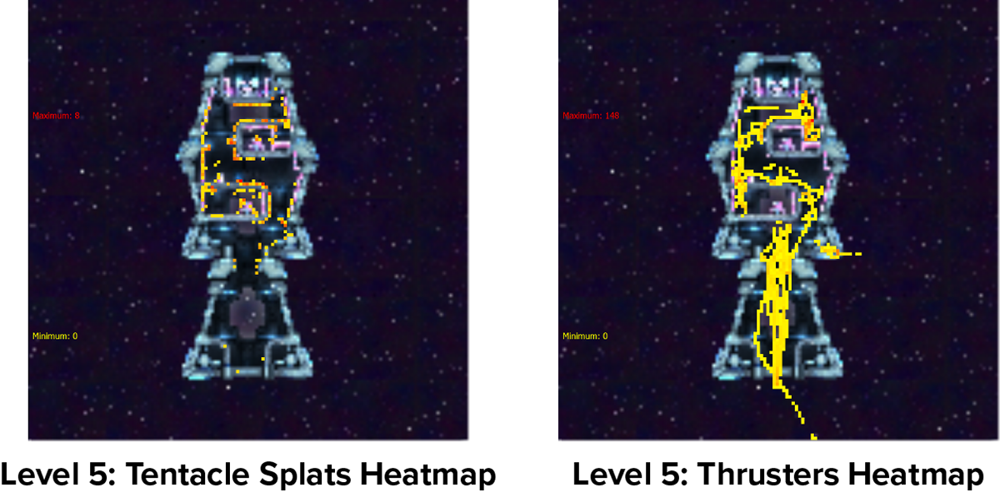
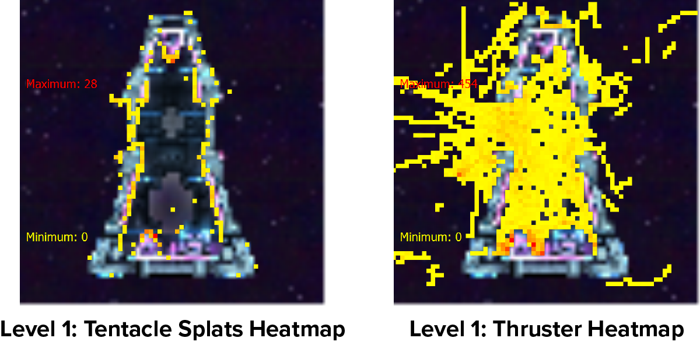
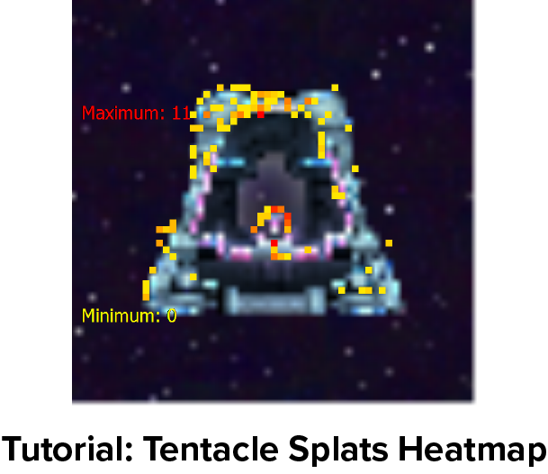

Celestialpod is a challenging experience. I was brought on to teach players the precise controls, as well as smooth out the difficulty curve throughout the levels. In doing so, I would improve the user experience by updating the user interface and feedback systems. In addition, I designed some of the enemies and boss behaviors, as well as the dialogue system and narrative-cinematic gameplay beats.
Research
To better understand the learning curve of the game and what players thought of the tentacle-based movement system, I selected User Groups as the primary method of research. As we already had a behavioral data collection solution, user group perceptions would help explain what players thought of the challenging controls, and where the game exceeded or failed expectations. I could then cross reference what players said, versus what they did with the behavioral telemetry, to find gaps in our knowledge, and critical problems with the game.

Results
Players reported that they had a 'pretty good understanding of the controls,' however, they were missing vital knowledge that would improve their play, and lower difficulty at higher levels. In addition, I found that the user interface (top left) displaying health and thrust power, are barely utilized during gameplay.
As for the controls, players found it hard to remember which tentacle was holding onto what. To help combat this, and make the controls more fluid with the mouse cursor, the left and right tentacles were rebound to their respective mouse buttons.
Problem and Solution
One major problem I encountered with the results, was the emphasis players put on their secondary movement ability 'Thrust', rather than the core ability that makes Celestialpod unique: 'Tentacles!'
Let me show you, using our behavioral level heatmaps!
These two heatmaps show the relationship between tentacle usage. As you can see, thrust usage is used a lot more throughout this level, specifically in the large open area near the bottom of the level.
Although this is not as ideal as we would like it to be, this is one of the more challenging levels and the team was fine with players using thrusters here, because the level is virtually impossible to complete once the player gets near the top of the map and has to curve their tentacles through tight corridors.
This kind of relationship we were not happy about as players were using thrust to an extreme. For a while this level was what players were thrown into as the introduction to the game. As you can see, players would pretty much only use thrust to get around the level. Players would fight with the thrust ability rather than learn to use tentacles.
So the problem was, 'how are we going to stop players from using thrust over tentacles?'
This had been an ongoing issue for a while, as over time the lead designer had continued to nerf the thrusting power to incentivize tentacles more.
The solution was pretty simple: we already had a plan for an ability upgrade system, so the obvious decision was to just remove the thrust ability from the tutorial level. This would force players to learn movement through the tentacles and pick up on some of the advanced tentacle movement early.
As you can see in the in-progress tutorial level, players are having a much easier time moving their tentacles. This also turned out to be a good thing for thrust, because as an upgrade, it can be a lot stronger and more useful then it was when it had been part of the starting abilities.
These changes have led players to be more capable of tackling harder levels with their newly learned tentacle powers!
This is how we’ve approached managing the time spent on the project over the course of its development. There have been some hiccups along the way, but for the most part we’ve been able to stay on a steady course. In retrospect, I feel like the area I put less effort into was the Individual Passion section. I relied heavily on my leads to encourage the team members, and I should have gotten more involved at regular intervals to keep up with members.
Thankfully, we’ve still gotten to the point where we can confidently put it out on the market. At this point, we’re squashing bugs and going through the Steam onboarding process. So excited to release!
Thanks for reading! Connect with us on Twitter, Facebook, or YouTube. To make sure you stay up to date, sign up for our email list!